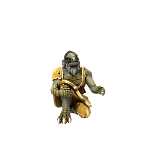

Dionus

Ideals
Dionus is a stoic. He believes that true nobility is to be true to one's own nature and holds all "civilisation" as a perversion.
Bonds
Many prominent world leaders hold Dionus in high esteem. The feeling is rarely mutual.
Flaws
Dionus does not believe in manners. If he takes issue with you, you will quickly find yourself with a facefull of his faeces. If the mood takes him, he will often masturbate in full view of strangers.
Dionus is one of the most prominent and respected philosophers of his time. His theory of Dignitas Degenerum has fundamentally shaped the lives and values of millions, transforming kingdoms and fuelling revolutions across the world. Mighty rulers of great kingdoms will undertake long pilgrimmages just to hear his thoughts on life, dignity and stoicism.
🡐 Notable Draceans